API Reference
- class accvlab.batching_helpers.RaggedBatch(tensor, mask=None, sample_sizes=None, non_uniform_dim=None)[source]
Class for representing batches with samples with variable size in one dimension.
- The representation of the batch contains 3 tensors:
- tensor:
This is the actual data. It has the size of the largest sample in the non-uniform dimension, and the other samples are padded on the “right” (i.e. at the end containing larger indices) with filler values to match the size of the largest sample. While the padding is typically initialized with 0, no values should be assumed for the padded region as the values there may change after operations are performed on the data. If the non-uniform dimension is dim==num_batch_dims, the shape is (*batch_dims_shape, max_sample_size, *data_shape). More generally, the first dimensions are the batch dimensions (one or more). The non-uniform dimension can be any dimension after the batch dimensions and the size of the non-uniform dimension always corresponds to the maximum sample size in the batch. The remaining dimensions correspond to the shape of the data, which can have any number of dimensions, including 0 (per-object scalar data).
- mask:
This is the mask indicating which elements are valid (True) and which are not (False). It has dimensions: (*batch_dims_shape, max_sample_size). The dimension after the batch dimensions corresponds to the non-uniform dimension in the data tensor.
- sample_sizes:
Sizes of the individual samples, i.e. the actual sizes without padding along the non-uniform dimension. Shape: (*batch_dims_shape,)
- Additional attributes describing the batch:
- non_uniform_dim:
Indicates which dimension is the non-uniform dimension
- num_batch_dims:
Number of batch dimensions at the beginning of the tensor
Note
The tensors described above correspond to the
tensor,mask, andsample_sizesattributes, respectively. The non-uniform dimension can be accessed asnon_uniform_dimand the number of batch dimensions asnum_batch_dims.Important
The
maskandnon_uniform_dimattributes may be shared between instances ofRaggedBatchinstances with different data tensors, so they should be treated as constants and never be changed in-place.Example
Here, we show an example of a
RaggedBatchinstance.- In the image::
Letters indicate data entries that are valid (i.e. correspond to the actual data).
‘*’ indicates padded filler entries (i.e. invalid entries) in the data.
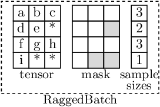
- Note that:
The example shows a single batch dimension of size 4. More batch and data dimensions are supported.
The maximum sample size (i.e. the size of the non-uniform dimension) is 3.
Each element in
self.tensormay represent a single value (corresponding to scalar data and 0 data dimensions), or itself represent a non-scalar entry (in case for one or more data dimensions).Even if more data dimensions are present, the mask has always num_batch_dims + 1 dimensions, as the data dimensions are not needed in the mask.
The sample_sizes have the same shape as the batch dimensions (i.e. (4,) in this example), as they contain one value per sample.
The sample_sizes and mask contain the same information. However
Dependent on the use case, one of them may be more efficient & convenient to use
One can be efficiently computed from the other (as is done as needed in the RaggedBatch implementation).
Note
The number of batch dimensions is determined from the shape of the provided mask or sample_sizes tensor.
Warning
If both mask and sample_sizes are set, they need to be consistent with each other. This is not checked in the constructor. Inconsistent masks and sample sizes will lead to undefined behavior.
- Parameters:
tensor (
Tensor) – Data to be stored (corresponding to thetensortensor ofRaggedBatch, see description above)mask (
Optional[Tensor], default:None) – Mask indicating which entries are valid (corresponding to themasktensor ofRaggedBatch, see description above). If not set, sample_sizes is internally used to create a mask. Note that at least one of mask or sample_sizes needs to be set.sample_sizes (
Optional[Tensor], default:None) – Number of valid entries for all samples (corresponding to thesample_sizestensor ofRaggedBatch, see description above). If not set, mask is internally used to create a sample sizes tensor. Note that at least one of mask or sample_sizes needs to be set.non_uniform_dim (
Optional[int], default:None) – Dimension in which the batch is non-uniform, default: 1
- classmethod FromOversizeTensor(tensor, mask=None, sample_sizes=None, non_uniform_dim=None)[source]
Create a
RaggedBatchinstance from a tensor which is over-sized in the non-uniform dimension.Over-sized means that the non-uniform dimension is larger than the maximum sample size in the batch.
- Parameters:
tensor (
Tensor) – Data to be stored (corresponding to thetensortensor ofRaggedBatch, see description above) except that the non-uniform dimension is larger than the maximum sample size in the batch. The tensor in the is truncated to the maximum sample size in the batch.mask (
Optional[Tensor], default:None) – Mask indicating which entries are valid (corresponding to themasktensor ofRaggedBatch, see description above). If not set, sample_sizes is internally used to create a mask. Note that at least one of mask or sample_sizes needs to be set. The mask is truncated to the maximum sample size in the batch.sample_sizes (
Optional[Tensor], default:None) – Number of valid entries for all samples (corresponding to thesample_sizestensor ofRaggedBatch, see description above). If not set, mask is internally used to create a sample sizes tensor. Note that at least one of mask or sample_sizes needs to be set.non_uniform_dim (
Optional[int], default:None) – Dimension in which the batch is non-uniform, default: 1
- Return type:
Note
The number of batch dimensions is determined from the shape of the provided mask or sample_sizes tensor.
Warning
If both mask and sample_sizes are set, they need to be consistent with each other. This is not checked in the constructor. Inconsistent masks and sample sizes will lead to undefined behavior.
- classmethod Empty(num_dims, non_uniform_dim, device, num_batch_dims=None, batch_shape=None)[source]
Create an empty instance.
The so created instance has a size of 0 along all dimensions.
Note
If neither num_batch_dims nor batch_shape is provided, the number of batch dimensions is 1 and the batch shape is (0,).
- Parameters:
num_dims (
int) – Total number of dimensionsnon_uniform_dim (
int) – The non-uniform dimensiondevice (
Union[device,str]) – Device to use for the instancenum_batch_dims (
Optional[int], default:None) – Number of batch dimensions. If provided, batch_shape cannot be set and size 0 is assumed for all batch dimensions.batch_shape (
Union[Sequence[int],int,None], default:None) – Shape of the batch (can be a sequence of ints or a single int in case of a single batch dimension). If not provided, the batch shape is (0,) * num_batch_dims. If provided, num_batch_dims cannot be set and the number of batch dimensions is inferred from the shape.
- Returns:
RaggedBatch– The resulting emptyRaggedBatchinstance
- classmethod FromFullTensor(full_tensor, non_uniform_dim=1, num_batch_dims=1)[source]
Create a
RaggedBatchinstance from a tensor representing a uniform-sized batch.- Parameters:
full_tensor (
Tensor) – Tensor to convert into aRaggedBatchinstancenon_uniform_dim (
int, default:1) – Dimension to use as the non-uniform dimension. Note that while in this special case, all dimensions are uniform, the non-uniform dimension has a special meaning (e.g. forget_non_uniform_dimension_transposed_to(), and many other functions) and needs to be set.num_batch_dims (
int, default:1) – Number of batch dimensions in the tensor. Default: 1
- Returns:
RaggedBatch– The resultingRaggedBatchinstance containing the input tensor
- property tensor: Tensor
Get the data tensor
See the description of
RaggedBatchfor more information on tensor.For setting the data tensor, use
set_tensor().
- property mask: Tensor
Get the mask tensor
See the description of
RaggedBatchfor more information on mask.The mask indicates which elements are valid (True) and which are not (False). It has dimensions:
(*batch_dims_shape, max_sample_size).
- property sample_sizes: Tensor
Get the sample sizes tensor
See the description of
RaggedBatchfor more information on sample_sizes.The sample sizes tensor contains the actual sizes of each sample in the batch along the non-uniform dimension. Its dimensions are
batch_dims_shape.
- property total_num_entries: int
Get the total number of entries.
This is the accumulated number of valid entries along the non-uniform dimension over all samples in the batch. This information is computed from the
sample_sizestensor when it is first accessed and re-used on subsequent calls.
- as_self_with_cloned_data()[source]
Create a copy, where the data tensor (i.e.
tensor) is cloned (while mask and sample sizes are shared)- Return type:
- create_with_sample_sizes_like_self(tensor, non_uniform_dim=None, device=None)[source]
Create a
RaggedBatchinstance with the same batch shape and sample sizes as thisNote that while the sample sizes are the same, the total number of dimensions, the non-uniform dimension, and the size of the data tensor except in the batch and the non-uniform dimensions may be different.
- Parameters:
tensor (
Tensor) – Data to set for the new instance (padded tensor)non_uniform_dim (
Optional[int], default:None) – Non-uniform dimension (in tensor). Can be set to None to use the same dimension as this. Default: Nonedevice (
Union[device,str,None], default:None) – Device on which to create the resultingRaggedBatchinstance. If not provided, the device of the input tensor is used.
- Returns:
RaggedBatch– ResultingRaggedBatchinstance with the same batch shape and sample sizes as this.
- get_non_uniform_dimension_transposed_to(dim)[source]
Get with the non-uniform dimension transposed to a given dimension.
If the given dimension is already the non-uniform dimension, self is returned.
- Info:
The non-uniform dimension cannot be set to a batch dimension (i.e., any dimension < num_batch_dims).
- Parameters:
dim (
int) – Dimension to transpose the current non-uniform dimension to- Returns:
RaggedBatch– ResultingRaggedBatchinstance
- get_existence_weights(dtype=torch.float32)[source]
Get the existence weights
The existence weights are 1.0 for the contained entries (i.e. entries corresponding to actual data as opposed to padded fillers) and 0.0 for filler entries.
In contrast to self.mask, the dimensionality and shape of the weights correspond to the dimensionality and shape of the data. This means that the mask can be directly applied to the data tensor (i.e.
tensor), regardless of the number of dimensions or which dimension is the non-uniform dimension.
- with_padded_set_to(value_to_set)[source]
Set filler/padded entries in the data (i.e.
tensor) to a fixed value.Note
This operation is not performed in-place, i.e. this.tensor is not changed. For an in-place operation, use
set_padded_to()instead.- Parameters:
value_to_set (
float) – Value to set for padded entries.- Returns:
RaggedBatch– Like self, but with the padded values set
- set_padded_to(value_to_set)[source]
Set filler/padded entries in the data tensor (i.e.
tensor) to a fixed value in-place.Note
Note that as this operation is in-place. This means that this.tensor is changed. No new
RaggedBatchinstance is created. If this is not desired, usewith_padded_set_to()instead, which is not in-place and returns a newRaggedBatchinstance.
- repeat_samples(num_repeats, batch_dim=None)[source]
Repeat along a single batch dimension
- Parameters:
num_repeats (
Union[int,Sequence[int]]) – Number of times to repeat. In case of a single value, the dimension in which to repeat is specified by batch_dim. In case of a sequence, the sequence needs to have the same length as the number of batch dimensions and batch dim must not be set.batch_dim (
Optional[int], default:None) – Which batch dimension to repeat along. Can only be set if num_repeats is a single value. If not set (and num_repeats is a single value), 0 is used.
- Returns:
RaggedBatch– ResultingRaggedBatchinstance with the samples repeated
- unsqueeze_batch_dim(dim)[source]
Unsqueeze a batch dimension
Important
The dimension to unsqueeze has to be among the batch dimensions (including adding a new batch dimension after the currently last batch dimensions, i.e. dim=self.num_batch_dims).
For unsqueezing a data dimension, use
unsqueeze_data_dim()instead.Note
As the batch dimensions are always before the non-uniform dimension, the non-uniform dimension is shifted by 1 accordingly.
Example
>>> example_batch.num_batch_dims 2 >>> example_batch.non_uniform_dim 4 >>> example_batch_unsqueezed = example_batch.unsqueeze_batch_dim(1) >>> example_batch_unsqueezed.non_uniform_dim 5
- Parameters:
dim (
int) – Batch dimension to add. Has to be in range [0,num_batch_dims].- Returns:
RaggedBatch– ResultingRaggedBatchinstance with the batch dimension added
- squeeze_batch_dim(batch_dim)[source]
Squeeze a batch dimension
Note
This operation is not performed in-place, i.e. this.tensor is not changed.
- Parameters:
batch_dim (
int) – Batch dimension to squeeze. Has to be in range [0,num_batch_dims).- Returns:
RaggedBatch– ResultingRaggedBatchinstance with the batch dimension squeezed
- reshape_batch_dims(new_batch_shape)[source]
Reshape the batch dimensions
Note
This operation is not performed in-place, i.e. this.tensor is not changed.
Important
The non-uniform dimension is adjusted to the new batch shape.
- Parameters:
new_batch_shape (
Union[int,Tuple[int,...]]) – New batch shape- Returns:
RaggedBatch– ResultingRaggedBatchinstance with the batch dimensions reshaped
- flatten_batch_dims()[source]
Flatten the batch dimensions :rtype:
RaggedBatchNote
This operation is not performed in-place, i.e. this.tensor is not changed.
- static broadcast_batch_dims(data)[source]
Broadcast the batch dimensions of a sequence of
RaggedBatchinstances to common batch dimensions.- Parameters:
data (
Sequence[RaggedBatch]) – Sequence ofRaggedBatchinstances- Returns:
Sequence[RaggedBatch] – Sequence ofRaggedBatchinstances with the batch dimensions broadcasted to the common batch dimensions
- apply(proc_step)[source]
Apply a function to
tensorand get results as new RaggedBatch instance(s).See the proc_step parameter for requirements for the used function.
Important
It is important to make sure that the tensors returned by proc_step fulfill the output requirements regarding the non-uniform dimension, sample sizes, and regarding the valid entries being stored first (i.e. lower indices), followed by filler values along the non-uniform dimension to ensure that the resulting
RaggedBatchinstances are correct. See the proc_step parameter for more details.- Parameters:
proc_step (
Union[Callable[[Tensor],Union[Tensor,Tuple[Tensor,...]]],Callable[[Tensor,Tensor],Union[Tensor,Tuple[Tensor,...]]],Callable[[Tensor,Tensor,Tensor],Union[Tensor,Tuple[Tensor,...]]]]) –Function to process the data tensor. All the defined inputs (see below) are expected to be positional arguments.
- param tensor:
Will contain
tensorof this- param mask:
If part of the function signature, will contain
maskof this- param sample_sizes:
As a positional argument, this can only be part of the function signature if mask is. If used, will contain
sample_sizesof this- returns:
Either a tensor or a tuple of tensors. For each tensor, a
RaggedBatchinstance will be output from apply(). Note that for each returned tensor, the non-uniform dimension, as well as the number of entries along that dimension, must correspond to this. Also, for each sample, the the valid entries must be located before any filler entries along the non-uniform dimension (as is in general the case for the data stored in aRaggedBatch, see documentation of the class). Note that the last point is generally fulfilled if no permutations are applied to the data tensor, as the input tensor contains valid entries first, followed by filler entries.
- Returns:
Union[RaggedBatch,Tuple[RaggedBatch,...]] –RaggedBatchinstance or tuple ofRaggedBatchinstances (depending on the output of proc_step), with the function applied to the data (i.e. totensor).
- set_tensor(tensor)[source]
Set
tensor.Important
The batch shape, the non-uniform dimension, and the number of entries along that dimension must correspond to this. Also, for each sample, the valid entries must be located before any filler entries (as is in general the case for the data stored in a
RaggedBatchinstance, see documentation of the class).- Parameters:
tensor (
Tensor) – Data tensor to set
- split()[source]
Split contained data (i.e. the data in
tensor) into individual samples.The batch dimensions are preserved in the nested list structure. For example, if the batch shape is (2, 3), the result will be a list of 2 lists, each containing 3 tensors.
The returned samples are cropped to not contain any filler entries. This means that the returned tensors correspond to the actual sample sizes.
Example
In the example below, the
split()operation is applied to aRaggedBatchinstance with a batch size of 4 (single batch dimension) and a maximum sample size of 3, resulting in a list of 4 tensors, and each tensor corresponding to a single sample without padded filler entries. Note that in the image below:Letters indicate data entries that are valid (i.e. correspond to the actual data).
‘*’ Indicates padded filler entries (i.e. invalid entries) in the data.
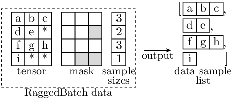
Each depicted element may represent a single value (corresponding to scalar data and 0 data dimensions), or itself represent a non-scalar entry (in case for one or more data dimensions).
- Returns:
Union[List[Tensor],List[List]] – The individual samples in a nested list structure that reflects the original batch shape. The individual tensors correspond to the actual sample sizes, and do not contain padded filler entries.For a single batch dimension, returns a flat list of tensors. For multiple batch dimensions, returns a nested list structure mirroring the batch dimensions.
- unsqueeze_data_dim(dim)[source]
Unsqueeze the data tensor (i.e.
tensor) along a dimension.Important
The dimension to unsqueeze has to be after the batch dimensions (including adding a new data dimension right after the batch dimensions, i.e. dim=self.num_batch_dims).
For unsqueezing a batch dimension, use
unsqueeze_batch_dim()instead.Note
If the new dimension is inserted before the current non-uniform dimension, the non-uniform dimension is shifted by 1 accordingly.
Example
>>> example_batch.num_batch_dims 1 >>> example_batch.non_uniform_dim 1 >>> example_batch_unsqueezed = example_batch.unsqueeze_data_dim(1) >>> example_batch_unsqueezed.non_uniform_dim 2
- Parameters:
dim (
int) – Dimension index into which to insert the new dimension- Returns:
RaggedBatch– Like self, but with the new dimension added, and the non-uniform dimension shifted accordingly if needed
- __getitem__(item)[source]
Item read access for
tensorThis is a shorthand for: … = self.tensor[item].
Note than as such, this allows for access to filler entries and does not check whether the accessed elements correspond to valid or filler entries.
- Return type:
- __setitem__(item, value)[source]
Item write access for
tensorThis is a shorthand for: self.tensor[item] = ….
Note than as such, this allows for access to filler entries and does not check whether the accessed elements correspond to valid or filler entries.
- Return type:
- property shape: Size
Get the shape of the data tensor (i.e.
tensor)The non-uniform dimension is reported as the size of the underlying
tensor, i.e. to the maximum size among all samples.
- to(*args, **kwargs)[source]
Create a new
RaggedBatchinstance converted as specified.This is a shorthand for: self.create_with_sample_sizes_like_self(self._tensor.to(*args, **kwargs)).
Note
The conversion is primarily performed on the
tensor. Thesample_sizesandmaskare adjusted accordingly if needed (e.g. when converting to a different device, but not when converting to a different dtype, as the dtype is only relevant for thetensor).- Parameters:
*args – Arguments for
torch.Tensor.to()as applied totensor**kwargs – Keyword arguments for
torch.Tensor.to()as applied totensor
- Returns:
RaggedBatch– A newRaggedBatchinstance with thetensorconverted to the given type and thesample_sizesandmaskadjusted accordingly if needed.
- accvlab.batching_helpers.apply_mask_to_tensor(data, mask, value_to_set=0.0)[source]
Apply mask to tensor
Apply a mask to a tensor, setting any elements in the tensor corresponding to
Falseentries in the mask to a fixed value. The mask may have fewer dimensions than the data. In this case, it is assumed to be constant in the remaining dimensions and the available dimensions correspond to the outer data dimensions (i.e. starting fromdim==0in the data).
- accvlab.batching_helpers.average_over_targets(data, nans_to_zero=True)[source]
Average along the non-uniform dimension, considering only the valid entries.
The dimension to average over is
data.non_uniform_dim.- Parameters:
data (
RaggedBatch) – Data to averagenans_to_zero (
bool, default:True) – Whether to replace NaNs with zeros after averaging. Default isTrue.
- Returns:
Tensor– Tensor containing per-sample averages
- accvlab.batching_helpers.batched_bool_indexing(input_data, input_mask)[source]
Batched boolean indexing.
This function performs batched boolean indexing on the input data using the input mask. Both the input data and the input mask can be either
RaggedBatchortorch.Tensorinstances.The indexing is performed along the non-uniform dimension of the input data. For tensors, the non-uniform dimension is assumed to be
dim==1.In case that one
input_dataorinput_maskis atorch.Tensorand the other is aRaggedBatch:A single batch dimension must be used
The sample sizes of the
RaggedBatchare assumed to also apply to the tensorThe non-uniform dimension of the tensor is assumed to be
dim==1
If both the input data and the input mask are tensors:
All entries along
dim==1(the non-uniform dimension) are assumed to be valid (i.e. sample size for each sample corresponds to the size of this dimension)The output will also be a
RaggedBatchin this case (as in general, the number ofTruevalues in the mask is not the same for all samples)A single batch dimension will be used (consistent to the assumption about the input data)
The non-uniform dimension will be at
dim==1(consistent to the assumption about the input data)
If both the input data and the input mask are
RaggedBatchinstances, multiple batch dimensions are supported.Warning
If both the input data and mask are
RaggedBatchinstances, it is assumed that the sample sizes match. Only the maximum sample size is checked and if the individual sample sizes are not the same, the behavior is undefined.- Parameters:
input_data (
Union[RaggedBatch,Tensor]) – The data to index into. Shape (in case of the non-uniform dimension beingdim==1):(*batch_shape, max_sample_size, *data_shape), wheremax_sample_sizeis the maximum sample size of the input data. Note that the data_shape may contain 0 or more entries. If the non-uniform dimension is notdim==1, themax_sample_sizeis also not the size of the second dimension (dim==1), but of the corresponding dimension.input_mask (
Union[RaggedBatch,Tensor]) – The mask to use for indexing. Shape:(*batch_shape, max_sample_size), wheremax_sample_sizeis the maximum sample size of the input data. Note thatdata_shapeis not present, as each data entry is treated as a single element in the indexing operation.
- Returns:
RaggedBatch–RaggedBatchinstance containing the indexed data for each sample.
Example
- In the illustration below:
Letters indicate data entries that are indexed in the input (and therefore appear in the output)
‘-’ indicates entries where the actual values are not relevant (in the input).
‘*’ indicates filler values in
RaggedBatchinstances.
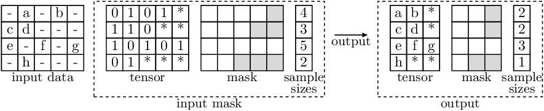
Each depicted entry in
input_datamay represent a single value (in case of 2D tensors), or itself be a non-scalar entry (in case thatinput_datahas more than 2 dimensions). The entries ininput_maskare always scalar.
- accvlab.batching_helpers.batched_bool_indexing_write(to_write, output_mask, to_write_into)[source]
Batched boolean indexing write (inverse operation of batched_bool_indexing).
This function performs the inverse operation of
batched_bool_indexing(). It writes data from aRaggedBatchinto a target tensor orRaggedBatchusing a boolean mask to specify where to write the data.The writing is performed along the non-uniform dimension of to_write_into. For tensors, the non-uniform dimension is assumed to be dim==1.
In case that one output_mask or to_write_into is a
torch.Tensorand the other is aRaggedBatch:A single batch dimension must be used
The sample sizes of the
RaggedBatchare assumed to also apply to the tensor (regardless of which of the two is which)The non-uniform dimension of the tensor is assumed to be dim==1
If both output_mask and to_write_into are tensors, all entries along dim==1 (the non-uniform dimension) are assumed to be valid (i.e. sample size for each sample corresponds to the size of this dimension).
Multiple batch dimensions are only supported if both output_mask and to_write_into are
RaggedBatchinstances.Warning
If both output_mask and to_write_into are
RaggedBatchinstances, it is assumed that the sample sizes match. Only the maximum sample size is checked and if the individual sample sizes are not the same, the behavior is undefined.- Parameters:
to_write (
RaggedBatch) – TheRaggedBatchcontaining the data to write. Shape (in case of the non-uniform dimension being dim==1): (*batch_shape, max_sample_size, *data_shape), where max_sample_size is the maximum sample size of the data to write. Note that the data_shape may contain 0 or more entries. If the non-uniform dimension is not dim==1, the max_sample_size is also not the size of the second dimension (dim==1), but of the corresponding dimension.output_mask (
Union[RaggedBatch,Tensor]) – The mask specifying where to write the data. Shape: (*batch_shape, max_sample_size), Note that data_shape is not present, as each data entry is treated as a single element in the writing operation.to_write_into (
Union[RaggedBatch,Tensor]) – The target tensor orRaggedBatchto write into. Shape: (*batch_shape, max_sample_size, *data_shape), The data_shape must match the data_shape of to_write. If the non-uniform dimension is not dim==1, the max_sample_size is also not the size of the second dimension (dim==1), but of the corresponding dimension.
- Returns:
Union[RaggedBatch,Tensor] –RaggedBatchortorch.Tensorinstance containing the target data with the selected elements from to_write written into the positions specified by output_mask.
Example
- In the illustration below:
Letters indicate data entries that are indexed in the input (and therefore appear in the output)
‘*’ indicates filler values in
RaggedBatchinstances.‘..’ indicates data which remains unchanged, i.e. is the same as in the to_write_into parameter and the output.
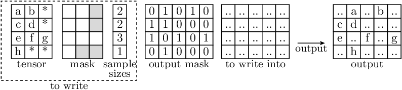
Each depicted entry in to_write and to_write_into may represent a single value (in case of 2D tensors), or itself be a non-scalar entry (in case that the data has more than 2 dimensions). The entries in output_mask are always scalar.
- accvlab.batching_helpers.batched_index_mapping(source_data, source_indices, target_indices, target_data)[source]
This function expects input data to be on the GPU.
Map values between
source_dataandtarget_datausing a mapping defined by pairs of indices for elements insource_dataandtarget_data, and set the corresponding values intarget_data.For a sample
iand a valid index pairj(valid meanstarget_indices.sample_sizes[i] > jandsource_indices.sample_sizes[i] > j), the operation can be expressed as (assuming non-uniform dimensiondim == 1for bothsource_dataandtarget_data):target_data[i, target_indices[i, j]] = source_data[i, source_indices[i, j]]This function sets the values in target_data in a way which corresponds to the line above for all valid matches in all samples.
Warning
It is expected that for each sample, the number of valid indices for the source and target matches, i.e.
target_indices.sample_sizes == source_indices.sample_sizes.If this is not the case, the behavior is undefined.
Warning
This function assumes that for each sample, there are no duplicate indices in
target_indices, i.e. there are no duplicates in the valid entries in:target_indices[i, 0:target_indices.sample_sizes[i]].If this is not the case, the behavior is undefined.
There are no such restrictions on source_indices.
- Parameters:
source_data (
Union[Tensor,RaggedBatch]) –Input data.
- Shape in case of a tensor:
(batch_size, num_entries_input, …)
In case of a RaggedBatch, the following holds:
target_data.shape[0] == batch_sizetarget_data.shape[target_data.non_uniform_dim] == num_entries_input
The number of dimensions needs to correspond to
target_data, and the shape needs to be the same except in the non-uniform dimension (dim == 1for tensors), as in this dimension, the matching is done using the index pairs.source_indices (
RaggedBatch) – Indices at which to get the input data. Shape: (batch_size, max_num_matches). Note that the batch size and sample sizes need to matchtarget_indices, i.e.target_indices.sample_sizes == source_indices.sample_sizesandmax_num_matchescorresponds to the maximum matches among all samples.target_indices (
RaggedBatch) – Indices at which to fill the data. Shape: (batch_size, max_num_matches) Note thatmax_num_matchescorresponds to the maximum matches among all samples.target_data (
Union[Tensor,RaggedBatch]) –Data to fill the values into.
Shape in case of a tensor: (batch_size, num_entries_output, …)
- In case of a RaggedBatch, the following holds:
target_data.shape[0] == batch_sizetarget_data.shape[target_data.non_uniform_dim] == num_entries_output
- Returns:
Union[Tensor,RaggedBatch] – Astarget_data, with the values fromsource_datainserted according to the pairs of corresponding indices insource_indicesandtarget_indices.Shape in case of a tensor:
(batch_size, num_entries_output, ...)In case of a RaggedBatch, the following holds:
target_data_filled.shape[0] == batch_sizetarget_data_filled.shape[target_data_filled.non_uniform_dim] == num_entries_output
Example
‘-’ indicates values in the input which are not used in the mapping
‘*’ indicates filler values in source_indices and target_indices, which are ignored.
‘..’ indicates data which remains unchanged, i.e. is the same as in the target_data parameter and the output.
Each depicted element in source_data and target_data may represent a single value (in case of 2D tensors), or itself be a non-scalar entry (in case that the data has more than 2 dimensions).
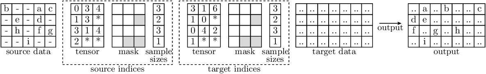
- accvlab.batching_helpers.batched_indexing_access(input_data, input_indices, filler_value=0.0, dim_to_index_in=None)[source]
This function expects input data to be on the GPU.
Batched indexing access with non-uniform indices.
Note that for each sample, the number of resulting entries corresponds to the number of indices. This means that in general, the output size will be non-uniform. Therefore, a
RaggedBatchis returned regardless of theinput_datatype.Note
Note that whether
input_datais aRaggedBatchor atorch.Tensor, the indexing ofinput_datais performed alongdim_to_index_in, which is not necessarily the non-uniform dimension ofinput_data.Warning
While the
filler_valueparameter can be used to set the value for filler values, the filler value may change when processing the resultingRaggedBatchfurther. Therefore, care needs to be taken when assuming a certain filler value.- Parameters:
input_data (
Union[RaggedBatch,Tensor]) – Data to which the indexing is applied.input_indices (
RaggedBatch) – For each sample (element along the batch dimension), the indices of entries to obtain from the input. Shape:(*batch_shape, max_num_indices)Here,max_num_indicescorresponds to the maximum number of indices over all samples.filler_value (
float, default:0.0) – Filler values for the remaining elements in the output (corresponding to the fillers ininput_indices). Default: 0.0dim_to_index_in (
Optional[int], default:None) – Dimension on which to apply the indexing. Cannot be a batch dimension of the input indices. If not set, will corresponds to input_indices.non_uniform_dim.
- Returns:
RaggedBatch– Result containing the indexed entries from the input tensor. For a sampleiand a valid indexj < input_indices.sample_sizes[i], the following holds (assumingdim_to_index_in == 1):indexed_vals[i, j] == input_data[i, input_indices[i, j]]The shape of the resulting data is:
indexed_vals.shape[0] == batch_sizeindexed_vals.shape[dim_to_index_in] == max_num_indicesRemaining dimensions correspond to the input data
Example
- In the illustration below:
Letters indicate data entries that are indexed in the input (and therefore appear in the output)
‘-’ indicates entries where the actual values are not relevant (in the input).
‘*’ indicates filler values in
RaggedBatchinstances.
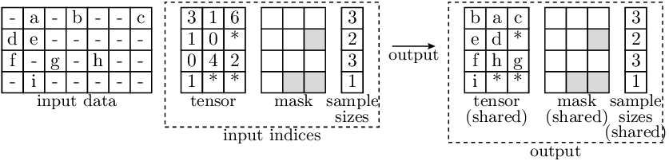
Each depicted entry in the data may represent a single value (in case of 2D tensors), or itself be a non-scalar entry (in case that
input_datahas more than 2 dimensions).Note that for
input_indices, the entries are always scalar.Also, we do not show the
filler_valuein the example. It is filled into the ‘*’-entries in the output.In this case, the
dim_to_index_inis 1.
- accvlab.batching_helpers.batched_indexing_write(to_write, output_indices, to_write_into, dim_to_index_in=None)[source]
This function expects input data to be on the GPU.
Batched indexing write, i.e. writing data into the indexed location, with non-uniform indices.
Non-uniform indices means that for each sample, the indices, as well as the number of indices, vary.
Note
This function is similar to
batched_inverse_indexing_access(), but instead of creating a constant tensor and filling the values in there, ato_write_intotensor is used, which may already contain values, and only the values corresponding to the indices are updated.Note
Note that whether
to_writeandto_write_intoareRaggedBatchortorch.Tensorinstances, the indexing is performed alongdim_to_index_in, which is not necessarily the non-uniform dimension ofto_writeorto_write_into.Warning
This function assumes that for each sample, there are no duplicate indices in
output_indices, i.e. there are no duplicates in the valid entries in:output_indices[i, 0:output_indices.sample_sizes[i]].If this is not the case, the behavior is undefined.
- Parameters:
to_write (
Union[RaggedBatch,Tensor]) – Data which to write into the given indices.output_indices (
RaggedBatch) – For each sample (element along the batch dimension), the indices of entries to write to in the output. Shape:(batch_size, max_num_indices)Here,max_num_indicescorresponds to the maximum number of indices over all samples.to_write_into (
Union[RaggedBatch,Tensor]) – Tensor or RaggedBatch to write into.dim_to_index_in (
Optional[int], default:None) – Dimension on which to apply the indexing. Optional, default is the non-uniform dimension of the output indices.
- Returns:
Union[RaggedBatch,Tensor] – Resulting tensor orRaggedBatchinstance. Corresponds toto_write_into, with the values fromto_writeinserted at the corresponding indices, and the original values fromto_write_intoeverywhere else.
Example
- In the illustration below:
Letters indicate data entries that are indexed in the input (and therefore appear in the output)
‘-’ indicates entries where the actual values are not relevant (in the input).
‘*’ indicates filler values in
RaggedBatchinstances.‘..’ indicates data which remains unchanged, i.e. is the same as in the
to_write_intoparameter and the output.
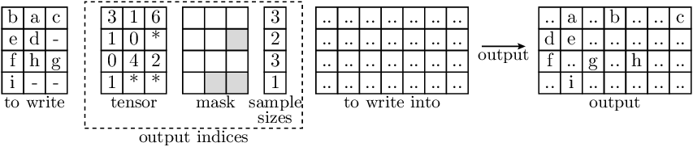
Each depicted entry in the data may represent a single value (in case of 2D tensors), or itself be a non-scalar entry (in case that the data has more than 2 dimensions).
Note that for
output_indices, the entries are always scalar.In this case, the
dim_to_index_inis 1.
- accvlab.batching_helpers.batched_inverse_indexing_access(input_data, output_indices, output_num_targets, filler_value=0.0, dim_to_index_in=None)[source]
This function expects input data to be on the GPU.
Batched setting of values at given indices, with non-uniform indices.
Non-uniform indices means that for each sample, the indices, as well as the number of indices, vary.
Note
This function is similar to
batched_indexing_write(), but instead of using ato_write_intotensor, a tensor with a uniform filler value is created first, and the values to set are written into that tensor.Note
Note that whether
input_datais aRaggedBatchinstance or a tensor, the indexing is performed alongdim_to_index_in, which is not necessarily the non-uniform dimension ofinput_data.Warning
This function assumes that for each sample, there are no duplicate indices in
output_indices, i.e. there are no duplicates in the valid entries in:output_indices[i, 0:output_indices.sample_sizes[i]].If this is not the case, the behavior is undefined.
- Parameters:
input_data (
Union[RaggedBatch,Tensor]) – Data which to write into the given indices.output_indices (
RaggedBatch) – For each sample (element along the batch dimension), the indices of entries to write to in the output. Shape:(batch_size, max_num_indices)Here,max_num_indicescorresponds to the maximum number of indices over all samples.output_num_targets (
int) – Size of the dimension corresponding to the indexed dimension in the outputfiller_value (
float, default:0.0) – Filler values for the non-indexed elements in the output. Default: 0.0dim_to_index_in (
Optional[int], default:None) – Dimension on which to apply the indexing. Optional, default is the non-uniform dimension of the output indices.
- Returns:
Tensor– Resulting tensor, containing the filled in values from the input, inserted at the corresponding indices, and the filler values everywhere else.For each sample
iand each valid indexj < output_indices.sample_sizes[i], the following holds:output[i, output_indices[i, j]] == input_data[i, j]The shape of the resulting data is:
output.shape[0] == batch_sizeoutput.shape[dim_to_index_in] == output_nums_targetsRemaining dimensions correspond to the input data
Example
- In the illustration below:
Letters indicate data entries that are indexed in the input (and therefore appear in the output)
‘-’ indicates entries where the actual values are not relevant (in the input).
‘*’ indicates filler values in
RaggedBatchinstances.
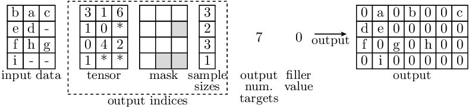
Each depicted entry in the data may represent a single value (in case of 2D tensors), or itself be a non-scalar entry (in case that the data has more than 2 dimensions).
Note that for
output_indices, the entries are always scalar.In this case, the
dim_to_index_inis 1.
- accvlab.batching_helpers.combine_data(data_list, other_with_same_sample_sizes=None, device=None, flatten_batch_dims=True)[source]
Combine data given as an (optionally nested) sequence of tensors to a single RaggedBatch
Nested sequences can be processed in two different ways:
If
flatten_batch_dimsisTrue, the sequence is flattened as if it were a single sequence. In this case, the result is a single RaggedBatch instance with a single batch dimension. The sequence of the samples in the batch is ordered as they appear indata_listwhen traversed in depth-first order. In this case, there are no requirements on the length of the sequences in data_list on any nesting level and the number of elements in the sequences can vary between individual elements and from one nesting level to the next. Also, the number of nesting levels can vary between individual elements.If
flatten_batch_dimsisFalse, the sequence is treated as a nested sequence and the nesting levels are preserved as batch dimensions, i.e. each nesting level corresponds to one batch dimension. As the batching dimensions need to be of uniform size, the number of elements in all lists for a given nesting level needs to be identical.For example, the following needs to be fulfilled for the 2nd nesting level:
len(data_list[0][0]) == len(data_list[1][0]) == ... == len(data_list[n-1][0]) == len(data_list[0][1]) == len(data_list[1][1]) == ... == len(data_list[n-1][1]) == ... len(data_list[0][m-1]) == len(data_list[1][m-1]) == ... == len(data_list[n-1][m-1])
where
nis the number of elements in the 1st nesting level andmis the number of elements in the 2nd nesting level.
The individual tensors contained in
data_listneed to match in size except for the dimensiondim==0(which will correspond to the non-uniform dimension in the resultingRaggedBatchinstance).Warning
If
other_with_same_sample_sizesis provided, it is assumed that the batch shape and sample sizes are identical. If this is not the case, the behavior is undefined.Example
In the example below, the
combine_data()operation is applied to a sequence of 4 tensors, each corresponding to a single sample. As there is no nesting, a single batch dimension is created. Note that in the image below:Letters indicate data entries that are valid (i.e. correspond to the actual data).
‘*’ Indicates padded filler entries (i.e. invalid entries) in the data.
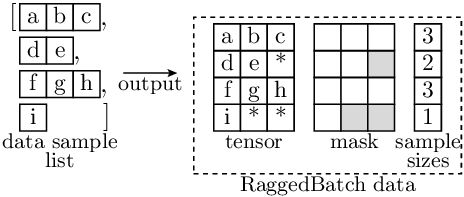
Each depicted element may represent a single value (corresponding to scalar data and 0 data dimensions), or itself represent a non-scalar entry (in case for one or more data dimensions).
- Parameters:
data_list (
Sequence[Union[Sequence,Tensor]]) – Sequence of tensors to combine.other_with_same_sample_sizes (
Optional[RaggedBatch], default:None) – Other RaggedBatch instance with the same batch size and sample sizes. This is optional and if provided, the mask and sample sizes tensors are shared between this RaggedBatch instance and the result, reducing the amount of needed memory.device (
Union[device,str,None], default:None) – Device on which to create the resulting RaggedBatch. If not provided, the device of the first element ofdata_listis used.flatten_batch_dims (
bool, default:True) – Whether to flatten the batch dimensions (see discussion above for details). Default isTrue.
- Returns:
RaggedBatch– The combined data. Shape:If
flatten_batch_dimsisTrue, the batch dimension isdim==0and the non-uniform size dimension isdim==1.- If
flatten_batch_dimsisFalse, the batch dimensions correspond to the nesting levels of
data_list. The non-uniform size dimension isdim==num_batch_dims(i.e. the dimension immediately following the batch dimensions).
- If
The remaining dimensions are as in the input tensors.
- accvlab.batching_helpers.get_compact_from_named_tuple(mask, data)[source]
Get a compact version of all tensors (as
RaggedBatchinstances) in a named tuple as a new named tuple of the same type.See
get_compact_lists()for details on compactification and an illustration of example inputs & outputs. This function works in the same way, but using named tuples instead of plain sequences as inputs & outputs.- Parameters:
mask (
Tensor) – Mask indicating which elements are valid (True) or not (False). Shape: (dim_size_0, dim_size_1)data (
NamedTuple) – Named tuple containing tensors to be compactified. For each tensor, the shape is (dim_size_0, dim_size_1, …). Note that different tensor in the list may have a different number of dimensions and a different size except for the first 2 dimensions, which have to correspond to the mask. The tuple may contain elements which are not tensors, and such elements will remain unchanged in the output.
- Returns:
NamedTuple– Compact data, where elements containing tensors in the input are replaces byRaggedBatchinstances, while elements of other types remain unchanged.
- accvlab.batching_helpers.get_compact_lists(mask, data)[source]
For a list of data tensors and a mask indicating which entries are valid, get a compactified version of the data.
Compactification is performed along the second dimension (i.e.
dim==1). Compactification in this context means that for this dimension:The size of the dimension is reduced so that it exactly fits the maximum number of valid elements over all samples, i.e. the size of the dimension is
max(sum(mask, dim==1)).The data is converted to
RaggedBatchinstances for further processing (see documentation ofRaggedBatchfor details of the format)
- Parameters:
mask (
Tensor) – Mask indicating which elements are valid (True) and which are not (False). Shape: (dim_size_0, dim_size_1)data (
Sequence[Union[Tensor,Any]]) – Sequence (e.g.list) of tensors to be compactified. For each tensor, the shape is (dim_size_0, dim_size_1, …). Note that different tensor in the sequence may have a different number of dimensions and a different size except for the first 2 dimensions, which have to correspond to the mask. The sequence may contain elements which are not tensors, and such elements will remain unchanged in the output.
- Returns:
List[Union[RaggedBatch,Any]] – Compact data, where elements containing lists of tensors in the input are replaces byRaggedBatchinstances, while other elements remain unchanged.
Example
- In the illustration below:
Letters indicate data entries that are indexed in the input (and therefore appear in the output)
‘-’ indicates entries where the actual values are not relevant (in the input).
‘*’ indicates filler values in
RaggedBatchinstances.
The illustration shows a single input entry
data[d], whereisinstance(data[d], torch.Tensor) == True. Note that for non-tensor elements ofdata, the data is not changed.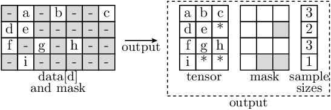
Each depicted element in the data may represent a single value (in case of 2D tensors), or itself be a non-scalar entry (in case that the data has more than 2 dimensions).
- accvlab.batching_helpers.get_indices_from_mask(mask)[source]
This function expects input data to be on the GPU.
Get the indices from a mask.
For each sample, the indices correspond to the elements in the mask that are
True.This functionality is e.g. useful when boolean indexing needs to be applied multiple times for different data and the same mask, as the indexing using numerical indices (using
batched_indexing_access()) is more efficient than boolean indexing (usingbatched_bool_indexing()). Note that for a single application of boolean indexing, thebatched_bool_indexing()function is more efficient.Note
Only 2D masks (batch_size, num_elements) are supported.
See also
batched_mask_from_indices()batched_indexing_access()batched_bool_indexing()- Parameters:
mask (
Union[Tensor,RaggedBatch]) – The mask to get the indices from.- Returns:
RaggedBatch– The indices from the mask.
Example
In the illustration below, ‘*’ indicates invalid indices, i.e. padding to make the tensor uniform for samples where the number of indices is smaller than
max_num_indices.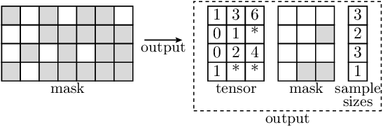
- accvlab.batching_helpers.get_mask_from_indices(mask_num_targets, indices)[source]
This function expects input data to be on the GPU.
Get a mask from indices, where the indices indicate which elements in the mask should be
True.The indices for each sample define the
Truevalues in the mask for that sample (i.e. the corresponding row in the mask).- For each sample
i, the operation performed by this function is equivalent to: mask[i, indices.tensor[i, :indices.sample_sizes[i]]] = True
Please also see the documentation of
RaggedBatchfor more details on the format of the indices, including thetensorandsample_sizesattributes.Note
This function is not the inverse of
get_indices_from_mask(), as the index order is not preserved when converting from indices to a mask.- Parameters:
mask_num_targets (
int) – The number of targets in the mask, i.e. themask.shape[1]to useindices (
RaggedBatch) – For each sample (element along the batch dimension), the indices of elements to set toTrue. Shape: (batch_size, max_num_indices)
- Returns:
(batch_size,
num_targets_in_mask)- Return type:
Resulting mask. Shape
Example
In the illustration below, ‘*’ indicates invalid indices, i.e. padding to make the tensor uniform for samples where the number of indices is smaller than
max_num_indices. Note that the index order does not matter for the resulting mask.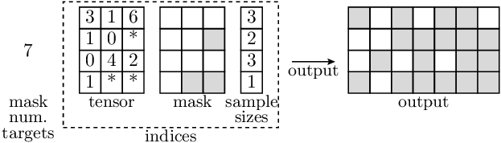
- For each sample
- accvlab.batching_helpers.squeeze_except_batch_and_sample(data)[source]
Squeeze the data except the batch dimension and the non-uniform dimension representing the sample size.
For tensors, the batch dimension is always
dim==0. The non-uniform dimensions is assumed to bedim==1. For ragged batches, the batch dimensions are the firstdata.num_batch_dimsdimensions and the non-uniform dimension is thedata.non_uniform_dimdimension.This function is designed to preserve the batch and non-uniform dimensions, which have a special meaning, while allowing to squeeze away other dimensions.
Important
Note that as a result of the squeezing, the non-uniform dimension may change to a different dimension. This happens if there are any dimensions before the non-uniform dimension which are squeezed away. For example:
>>> example_batch.shape torch.Size([4, 1, 1, 3, 4]) >>> example_batch.num_batch_dims 2 >>> example_batch.non_uniform_dim 3 >>> example_batch_squeezed = squeeze_except_batch_and_sample(example_batch) >>> example_batch_squeezed.shape torch.Size([4, 1, 3, 4]) >>> example_batch_squeezed.non_uniform_dim 2
Note that the non-uniform dimension is now
dim==2instead ofdim==3. Also, asdim==1is one of the batch dimensions, it is not squeezed away. The same would be true for any other batch dimension or the non-uniform dimension.- Parameters:
data (
Union[Tensor,RaggedBatch]) – Data to be squeezed- Returns:
Union[Tensor,RaggedBatch] – Squeezed data
- accvlab.batching_helpers.sum_over_targets(data)[source]
Sum over the non-uniform dimension, considering only the valid entries.
The dimension to average is
data.non_uniform_dim.- Parameters:
data (
RaggedBatch) – Data to average- Returns:
Tensor– Tensor containing per-sample sums